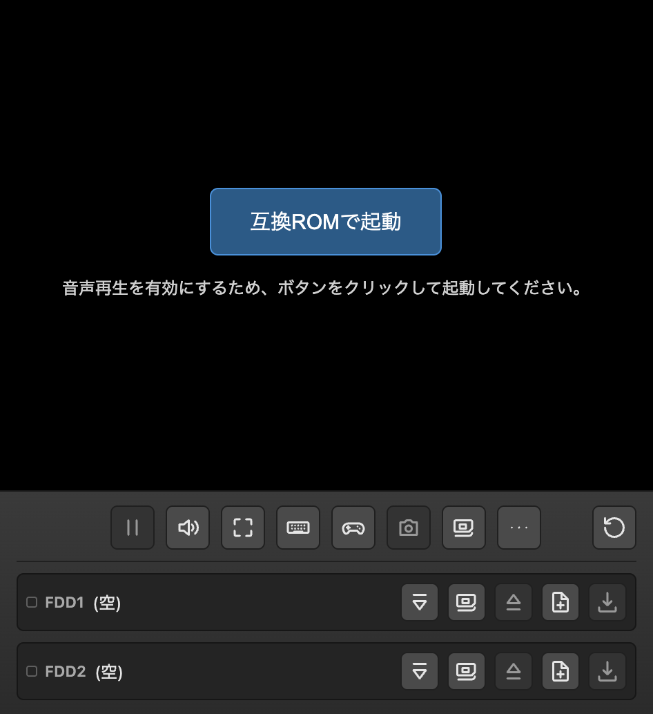
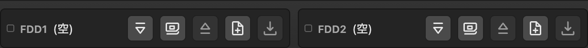
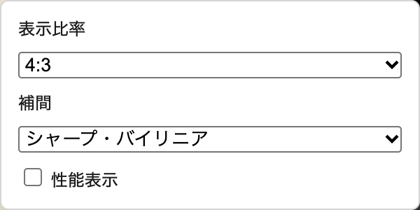
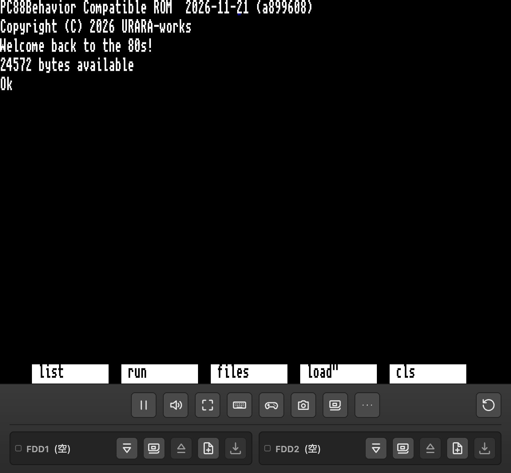
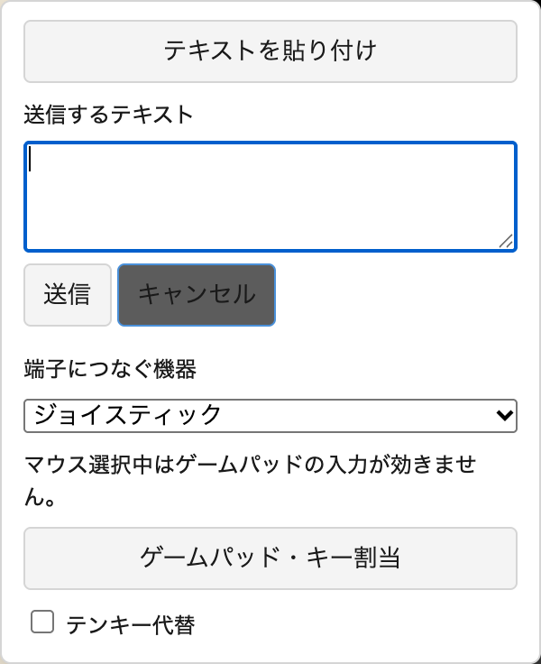
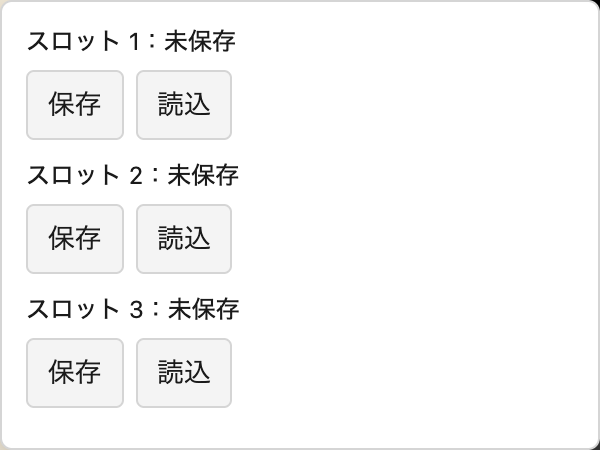
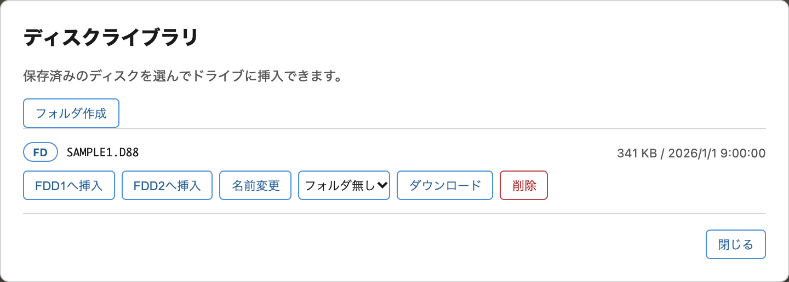
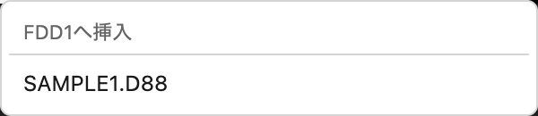
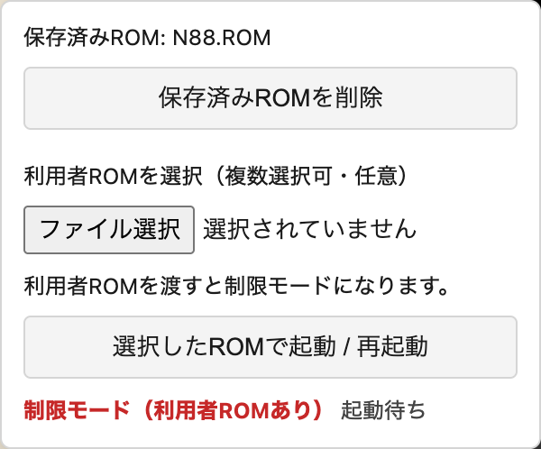

はじめに
WebQ88 は、PC-8801 の動作をブラウザ上で再現する Web プレイヤーです。エミュレーションには QUASI88 を libretro 化した QUASI88-libretro の wasm ビルドを使っています。公式ROMの代わりに クリーンルームで作った互換ROM(PC88Behavior)を同梱しているので、URL を開くだけで N88-BASIC 互換の画面まで起動します。
PC-8801 の公式ROM・市販ソフトのディスクイメージは同梱していません。お手元のディスク イメージ(D88 など)は、ドライブ行へドラッグ＆ドロップするなどして読み込めます。 読み込んだディスクはサーバーへ送信されず、ブラウザの中だけで扱われます。
起動する

- ページを開くと「互換ROMで起動」ボタンが表示されます。保存済みの利用者ROMがある場合は「登録したROMで起動」と表示されます。
- ボタンをクリックすると起動します。音声を有効にするため、起動にはこのクリックが必要です。
- 起動後、画面をクリックするとキーボード操作が画面に戻ります。
URLに run=1 を付けると、ボタンを押さずに自動で起動します(→「URLでディスクを指定して起動」)。
ディスクイメージを読み込む
画面にドロップすると FDD1 に挿入します。Shift キーを押しながらドロップすると FDD2 に挿入します。
複数枚入りのファイルは、起動後にドライブ行で枚数を選べます。
画面の下に、FDD1 と FDD2 の2つのドライブ行があります。

- 挿入（下向き三角と横線） — D88 / 88D / ZIP / LZH ファイルを選んで挿入します。
- ライブラリから挿入 — 保存済みディスクの一覧から選びます。
- ドラッグ＆ドロップ — ドライブ行へファイルをドロップしても挿入できます。
- 排出（上向き三角と横線） — ディスクを排出します。
- ダウンロード — 現在のディスクをダウンロードします。
- ブランクFDを作成（両ドライブ） — 空の N88-BASIC 2D データディスクを作成して挿入します。起動用ではありません。
ドライブ行のランプは、実際にディスクへアクセスしたときだけ点灯します。ZIP/LZH を選んだ場合は 展開して、中の .d88 / .88d をすべてライブラリに登録し、先頭の1枚を挿入します。
「…」→「ディスク」→「ファイル転送」で、標準2Dの N88-BASIC ディスク内のファイルを一覧・取り出し・ASCII形式での書き込み・削除できます。ゲストがディスクを使用していないときに操作してください。再挿入後もゲストのキャッシュが残る場合があります。MCPからの同操作は制限モードでは使えません。
URLでディスクを指定して起動
URLパラメータでディスクを指定して開くと、挿入済みの状態で起動できます。
| パラメータ | 内容 |
|---|---|
fd1=URL / fd2=URL | ドライブ1・ドライブ2に入れるディスクイメージのURL(パーセントエンコードしてください) |
lib=URL | 挿入せず、ディスクライブラリに登録します。複数回指定できます |
run=1 | 起動ボタンを押さずに自動で起動します |
bridge=1 | AIエージェント用の WebSocket ブリッジにつなぎます(→「AIから操作する」) |
aspect=4:3 / native | 表示比率 |
filter=sharp / nearest | 画面の補間方法 |
perf=1 | 性能表示を今回だけ有効にします |
volume=0〜100 | 音量 |
mute=0 / 1 | ミュート解除 / 有効化 |
driveSound=0 / 1 | ドライブ動作音の無効化 / 有効化 |
pause=1 | 一時停止状態で起動 |
表示・音声・一時停止の指定は今回のみ有効で、保存済み設定を変更しません。不正値は無視します。
例: ./?fd1=https%3A%2F%2Fexample.com%2Fdisk.zip&run=1
- ZIP/LZH は展開し、中の .d88 / .88d をすべてライブラリに登録して先頭を挿入します。
- 配布元のサーバーは CORS に対応している必要があります。Dropbox の共有リンクは自動で変換します。Google Drive は中継サービス(ビルド時の
VITE_DISK_PROXY)が必要です。OneDrive には対応していません。 - 2回目以降は、保存済みの変更を復元します。ライブラリの「配布元に戻す」で取り直せます。
- 「…」メニューの「ディスク」→「共有URLをコピー」で、挿入中のURL由来ディスクの共有URLをコピーできます。
ツールバーと「…」メニュー
「…」から「表示」「入力」「音」「ディスク」「ステート」「ROM」のサブメニューを開けます。「音」では音量とドライブの動作音を調整できます。


| ボタン | 動作 |
|---|---|
| 一時停止 | 動作を止める・再開する |
| ミュート | 音を消す・戻す(音量は「…」→「音」) |
| 全画面表示 | 画面を拡大する(もう一度押すと戻ります) |
| ソフトキーボード | 画面上に PC-88 配列のキーボードを出す |
| バーチャルパッド | タッチ用の十字キーとボタンを出す |
| スクリーンショット | 画面を PNG で保存する |
| ディスクライブラリ | 保存済みのディスクを選んで挿入する |
| …(その他の操作) | 「表示」「入力」「音」「ディスク」「ステート」「ROM」の各設定 |
| リセット | マシンをリセットする |
画面表示（4:3 / ドット等倍 / 補間）
既定では、実機のモニタのように4:3で表示します。ツールバーの「…」メニューの「表示」で 次の設定を変えられます。設定はブラウザに保存されます。
- 表示比率 — 「4:3」と「ドット等倍」を切り替えます。ドット等倍はエミュレータの解像度をそのまま正方形ピクセルで表示します。
- 補間 — 「シャープ・バイリニア」と「ニアレスト」を切り替えます。
「全画面表示」ボタンで画面を拡大でき、「スクリーンショット」ボタンで画面を PNG で保存できます。
キーボード

英数字、Enter、矢印、Shift、Ctrl、F1〜F10 などは、対応するキーで入力します。記号は、 入力された文字に合わせて PC-88 のキーへ変換します。画面をクリックすると、キー入力が画面に戻ります。
テンキーのないパソコンでは、「…」メニューの「入力」→「テンキー代替」をオンにしてください。 メインの数字キー 0〜9 がテンキーの 0〜9 に、矢印キーの上・下・左・右がテンキーの 8・2・4・6 に なります。既定はオフで、設定はブラウザに保存されます。
タッチ操作や、キーボードのない環境では、ツールバーの「ソフトキーボード」で画面上に PC-88 配列のキーボードを出せます。
ゲームパッド・キー割当とバーチャルパッド

ツールバーの「バーチャルパッド」で、タッチ用の十字キーとボタンを画面に表示できます。 物理的なゲームパッドは、接続すると使えます。
「…」メニューの「入力」→「ゲームパッド・キー割当」では、タブを切り替えて次の内容を設定できます。
- 接続中のゲームパッドの状態
- ゲームパッドのボタンと軸の割当、デッドゾーン
- バーチャルパッドの各部品の割当
- 物理キーボードの変換先
ゲームパッドや物理キーは「押して追加」で入力元を検出し、一覧の行を選んで PC-88 キーを押すと割り当てられます。各行は削除できます。バーチャルパッドも一覧から部品を選びます。物理キーの再割り当ては有効・無効を切り替えられます。プリセットやプロファイルの作成・複製も利用でき、設定はブラウザに保存されます。 「テンキー代替」の設定は引き継がれますが、個別に割り当てたキーボードの設定が 「テンキー代替」より優先されます。割当先はコアの制約により PC-88 のキーです。
テキストを貼り付ける
「…」→「入力」→「テキストを貼り付け」を開き、文字を入力して「送信」を押します。ASCII と半角カナを送れます。送れなかった文字は送信後に表示され、送信中は中止できます。

ステート保存と復元
「…」→「ステート」で3つのスロットに実行状態を保存・読込できます。保存時と現在の ROM 構成やディスクが違う場合は確認が表示されます。利用者 ROM のステートは利用者 ROM で起動したときだけ読み込めます。

ディスクライブラリ
ディスクはフォルダで整理できます。


ツールバーの「ディスクライブラリ」ボタンで、これまでに読み込んだディスクの一覧が開きます。 各ディスクに対して次の操作ができます。ドライブ行の「ライブラリから挿入」からも選択できます。
- FDD1へ挿入 / FDD2へ挿入
- 名前変更 — 表示名を変更します。
- 移動先フォルダ — フォルダへ整理します。
- ダウンロード — 書き込み内容を含む現在のイメージを保存します。
- 配布元に戻す(URLから読み込んだディスクのみ) — 保存済みの変更を破棄して、配布元から再取得します。
- 削除
ディスクの保存と、データが消える条件
ゲストが書き込んだ内容は、数秒おきにこのブラウザ(IndexedDB)へ自動保存され、次に開いたときに ドライブへ自動で挿入し直されます。保存先はこのブラウザの中だけで、サーバーへは送信されません。
- サイトデータ(Cookie など)を削除したとき
- シークレットウィンドウで開いたとき
- 端末の容量が不足したとき
- Safari で7日間使わなかったとき
- 別のブラウザ・別の端末で開いたとき(保存は共有されません)
手持ちのROMで起動する（制限モード）

保存済みROMの名前は「…」→「ROM」で確認できます。「保存済みROMを削除」を押すと選択中のファイルも解除され、次回起動から互換モードになります。
- 「…」メニューの「ROM」→「利用者ROMを選択（複数選択可・任意）」で、お持ちのROMファイルを選びます。
- 「選択したROMで起動 / 再起動」を押すと、そのROMで起動し直します。
ROM はブラウザの中だけで使い、どこにも送信しません。利用者ROMで起動している間は 制限モードになり、AIから操作する機能の一部が使えなくなります (→「AIから操作する」)。ROM の入手と使用は、利用者自身が適法に行ってください。
公式ROMが必要なソフトを起動したとき
互換ROMは、公式ROMの内部機能を直接使うソフトには対応していません。この種のソフトを互換ROMで動かすには、公式ROMの中身を解析して同じ内部ルーチンを再現するしかありません。互換ROMは公式ROMを解析せず、外から観測できる振る舞いだけで作っているため、対応していません。そのようなソフトを起動すると、画面が止まり、理由の案内が表示されます。

案内の「公式ROMを選んで起動」ボタン、または手持ちのROMの登録から公式ROMを選んで起動し直すと、動く場合があります。
公式ROMを読み込んだ状態では見張りは働かず、ソフトは公式ROMのまま実行されます。ROMはブラウザの中に保存され、外部へ送信されません。
AIから操作する（MCP連携）
ローカルで動かす MCP サーバー経由で、Claude Code などの AI エージェントから WebQ88 を 操作できます。MCP サーバーはあなたのマシン上で動きます。
- リポジトリの
mcp/で MCP サーバーをセットアップします(手順は mcp/README.md)。 - ブラウザで WebQ88 を
?bridge=1付きで開きます。ページがローカルの MCP サーバーへ接続します(既定のポートは 3188。?bridge=ポート番号でも指定できます)。
操作できる内容の例は、状態の取得、リセット、キー入力、文字列の入力、画面の確認(画面の署名)、
画面の変化の待機、ディスクの挿入・排出・一覧(insert_disk / eject_disk / list_disks)などです。複数枚入りのファイルは起動後にドライブ行で選択でき、insert_disk の image は 0 始まりで省略できます。コマンドの一覧は
docs/AUTOMATION.md
を参照してください。
互換ROMでは find_text と wait_screen が画面本文も返します。利用者ROMを読み込んだときは、クリーンルームを守るため、画面の文字・画面写真・メモリをAIに返す機能は使えません。キー入力やディスク操作の一部は使えます。
paste_text は ASCII・半角カナを送信し、send_keys はキーの組み合わせを送ります。list_states はステートを一覧表示し、list_disk_library はライブラリを一覧表示、export_disk はドライブのイメージを取得、persist_disks はライブラリディスクの変更を即時保存します。
制限モード(利用者ROMで起動しているとき)では、画面本文の取得、スクリーンショット、
メモリの読み書き、ドライブのディスクイメージの取り出し(get_disk_image / export_disk)など、一部のコマンドが拒否されます。
トラブルシューティング
- 音が出ない — ブラウザの制限により、起動ボタンをクリックして起動する必要があります。ミュートがオンになっていないか、「…」メニューの「音」の音量も確認してください。
- 漢字の形が実機と違う — 同梱の漢字ROMは東雲フォント(パブリックドメイン)から作った自作のものなので、字形は実機と異なります。
- 公式環境で SAVE した BASIC プログラムが読めない — 中間言語形式のBASICプログラムは読めません。プログラムのやり取りは ASCII 形式(
SAVE "x",A)で行ってください。 - 動かないソフトがある — 互換ROMは公式ROMと完全に同じではないため、動作しないソフトがあります。
- ディスクが消えた — ブラウザの保存は、サイトデータの削除などで消えます。大事なディスクはダウンロードして保管してください(→「ディスクの保存と、データが消える条件」)。